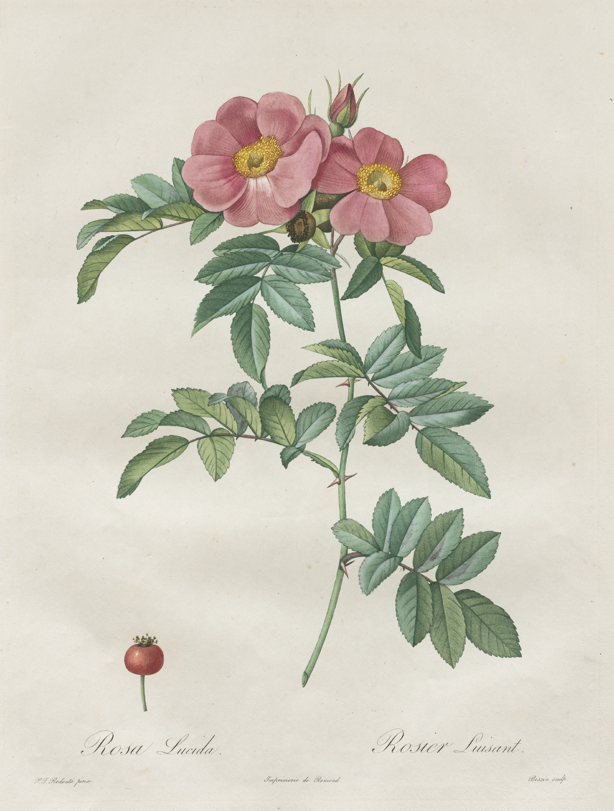

Pierre-Joseph Redouté came to Paris from the Ardennes with almost nothing, a painter’s son who had spent his teens going from town to town painting portraits and altarpieces, and found work drawing the flowers of the Jardin du Roi. He drew them for Marie-Antoinette, and after the Revolution, which he survived by being useful, for the Muséum. Then for Joséphine Bonaparte, who in 1799 bought the house at Malmaison and filled its gardens and glasshouses with plants from everywhere. For her he made the eight volumes of Les Liliacées, lilies and irises and amaryllis, nearly five hundred plates.
Les Roses came after her. Joséphine died at Malmaison in May 1814, and the first part of the book appeared three years later, 168 plates in thirty parts, with a text by the botanist Claude-Antoine Thory. It is often called the roses of Malmaison, but most of them were drawn in the nurseries and gardens of Paris and its suburbs; this one, Rosa lucida, the shining rose, is a wild rose of the American north-east, named for the gloss on its leaves.
Redouté did not engrave. He painted each rose in watercolour on vellum, and the paintings went to engravers, here a man called Bessin, others Langlois, Chapuy, Victor, Charlin, who cut them into copper not in lines but in dots, tens of thousands to a plate. The printing was done by Rémond, and the way it was done is the reason a printed page of Redouté can be mistaken for a painting.

Stipple was a London fashion when Redouté first saw it. The engraver laid an etching ground on polished copper and pricked the drawing through it with needles and a toothed wheel, the dots set close where the shade was deep and loose where the petal turned to the light, then let acid bite them; afterwards he went over the plate with a curved graver for the palest tones, which acid could not make fine enough. Contours were dots too, or the faintest line. Nothing on the plate says where a petal stops. The eye does that, from how the dots crowd and thin.
The printer inked it à la poupée, with a dolly of rolled rag for each colour: rose madder into the flowers, green into the leaves, yellow into the stamens, black into the lettering, each worked into its own few square inches of copper and a little past them. Then the warm plate was wiped with stiff muslin and finished with the palm of the hand until the surface shone, the colours left only down in the dots, and a sheet of dampened paper went through the press on top of it. One pull, every colour at once. The damp paper drew the ink up out of each pit and it spread a fraction as it landed, so the dots softened into one another; that is the bloom on a Redouté petal, which no line engraving can give.
The print that comes off the plate is pale and a little flat, the colour of a pressed flower. Colourists finished each impression by hand, laying transparent watercolour over the printed colour, glaze on glaze in the cup of each flower, a warmer green on the lit side of the leaves, the red of the hip, a touch of something brighter in the stamens. No two copies of the book are quite alike, and the best of them were taken for paintings by people who should have known better.